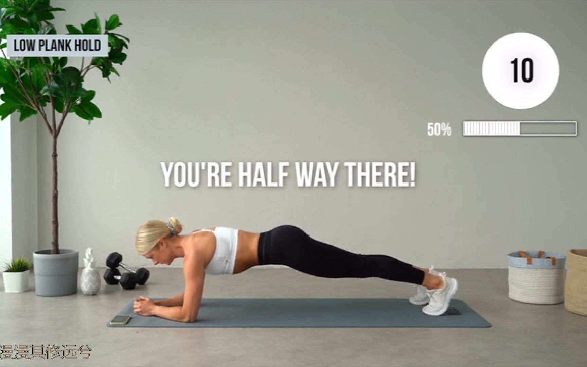
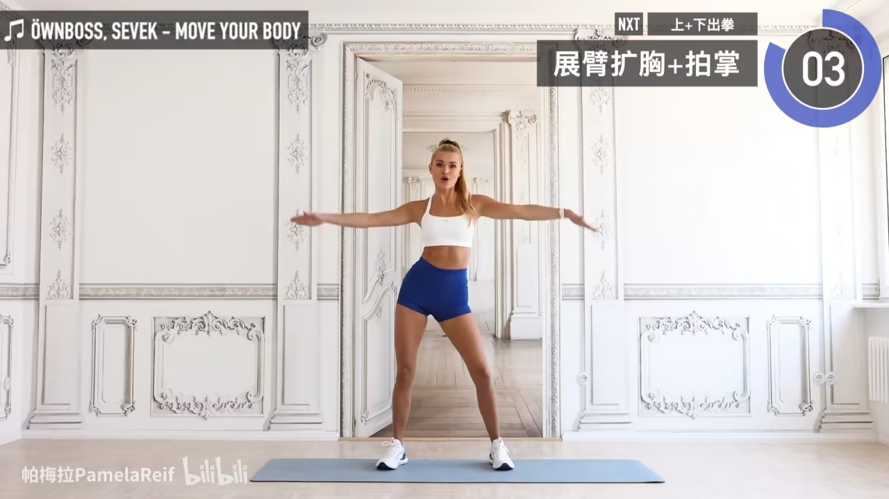

← 返回兴趣爱好
运动
我常跟练的运动

全程站立完成，不需要任何器械，宿舍或家里都能跟练。 动作循序渐进，30分钟下来核心和腿部都会有很明显的感知， 坚持一段时间之后体型变化是真的看得出来的。

久坐学习之后肩颈特别容易紧绷，这套动作专门针对这个问题。 跟完之后有一种从头到脖子都松开了的感觉， 睡前做一遍效果尤其好，推荐给每个长时间对着屏幕的人。
运动前做可以激活肌肉、降低受伤风险，运动后做帮助身体恢复、缓解次日酸痛。 动作不难、时间短，很容易养成习惯， 坚持下来之后感觉整体柔韧性都有明显提升。